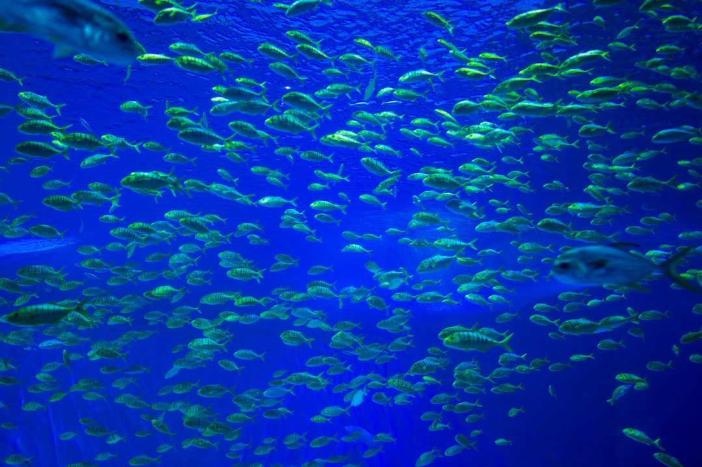
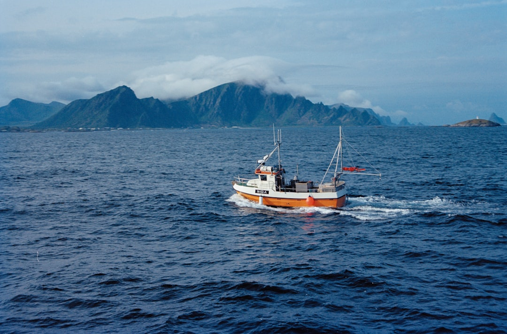
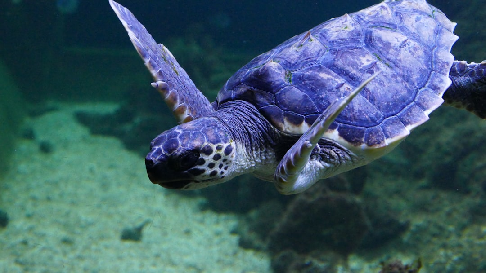

Marine Protected Areas: Safeguarding Our Seas
What Are Marine Protected Areas?

Marine Protected Areas (MPAs) are designated regions of the ocean where human activities are regulated to conserve marine ecosystems, biodiversity, and cultural resources. They range from highly protected no-take zones where all extraction is prohibited, to multi-use areas that allow some sustainable activities like regulated fishing.
Currently, approximately 8% of the global ocean is covered by some form of MPA designation. The international target agreed under the Kunming-Montreal Global Biodiversity Framework is to protect at least 30% of the ocean by 2030 — a goal known as "30 by 30". Achieving this target requires significant expansion of protected areas, particularly in the high seas beyond national jurisdiction.
Benefits of Marine Protected Areas

Research consistently demonstrates that well-managed MPAs deliver significant ecological and economic benefits. Within protected boundaries, fish populations typically increase in size, abundance, and diversity. This "spillover effect" benefits neighbouring fishing grounds as fish move beyond MPA boundaries.
Healthy marine ecosystems within MPAs also provide essential services to humans, including coastal protection from storms and erosion, carbon sequestration by seagrass meadows and mangroves, and support for sustainable tourism and recreation industries that create local employment.
A study published in the journal Nature found that fully protected marine areas have, on average, 670% more fish biomass than unprotected areas. This dramatic difference underscores the importance of strong protection levels within MPA networks.
Challenges Facing MPAs

While MPAs are a powerful conservation tool, they face several significant challenges. Many protected areas exist only "on paper" — legally designated but lacking the funding, personnel, or infrastructure needed for effective enforcement and monitoring.
Political and economic pressures from fishing industries, energy companies, and coastal development interests often weaken MPA protections. Climate change adds another layer of complexity, as warming waters and ocean acidification affect ecosystems regardless of their protection status.
Effective MPAs require ongoing monitoring, community engagement, adequate funding, and adaptive management that responds to changing environmental conditions. International cooperation is particularly critical for protecting marine ecosystems in the high seas.
How Students Can Support MPAs

Students can play a vital role in supporting marine protection efforts through education, advocacy, and direct action:
- Learn and share: Study marine conservation issues and share knowledge through campus events, social media, and conversations.
- Support MPA campaigns: Sign petitions and engage with organisations like the Marine Conservation Society that advocate for stronger ocean protections.
- Volunteer for citizen science: Participate in marine biodiversity monitoring programmes that provide data for MPA management.
- Make sustainable choices: Choose sustainably sourced seafood and reduce your environmental footprint to ease pressure on marine ecosystems.
- Engage with policy: Write to elected representatives supporting marine protection legislation and the 30 by 30 target.